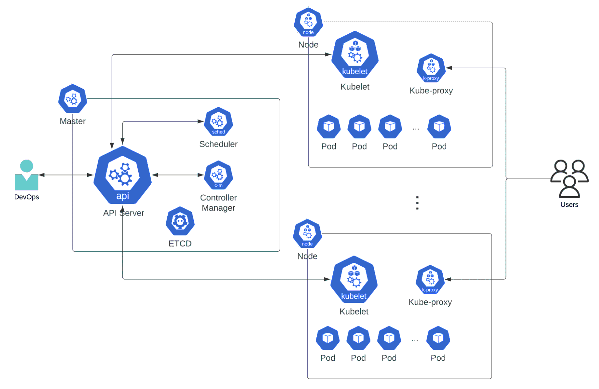

¿DevOps?
- Sysadmin: Systems Administrator
- DevOps: You build it, you run it.
- SRE: Systems Reliability Engineer
- Platform Engineering: DevOps Is Dead...
And yet something new... Why?!? DevOps primary consequence
is the increasing cognitive load put on developers.
Are they really different?
Primary goals...
- DevOps: Optimize the development process.
- SRE: Maximum application reliability.
- Platform Engineering: Optimize the speed and efficiency of software delivery operations.
Article: How is Platform Engineering Different from DevOps and SRE?
Syadmin, DevOps or SRE?
Let's call it: Modern System Administration
- SRE Google's view Book & site
- Modern System Administration by Jennifer Davis, Nov 2022, O'Reilly
Topics
- Hosting: Digital Ocean, Linode, AWS, GCS, Azure, Heroku, ...
- Hosting services: Acquia, Pantheon, Platform...
- Networking: Load balancers, VPNs, letsEncrypt, etc...
- Caching Services: CloudFlare, Netlify, CDNs, etc...
- Local Envs & Docker: Docksal, Lando, DDEV, others...
- Languages: Bash, Python, YML, Ansible, terraform, etc...
- DevOps: CircleCI, Github Actions, GitlabCI, Bitbucket pipelines, Jenkins, etc...
- Monitoring: CloudWatch, NewRelic, Prometheus, Grafana, others...
Hosting: What we can use today
- On-Prem
- Cloud Computing:
- Virtual Machines
- Containers
- Serverless
What should you choose?
Cloud Computing Mayor Players
{kind=link}
Cloud Services
{kind=link}
On Prem vs Cloud
{kind=link}
Scaling Up vs Out

Scaling & Bills...
- Autoscale: Dynamically scale to meet changing demand.
- You can schedule events.
- Reduces management overhead.
- Difficult to predict how much you will spend.
Caching Services
- CloudFlare
- Netlify
- AWS CloudFront
- Azure CDN
- Fastly
- Akamai
- ...
Network
- Load balancers
- Private Virtual Networks
- VPNs
- letsEncrypt
IPv4 vs IPv6
{kind=link}
Network example
{kind=link}
Security
- Infrastructure security: Physical & Cybersecurity Security
- Shared Responsibility Model (ie. you run your infrastracture on AWS)
- PCI DSS (Payment Card Industry Data Security Standard)
- CVE (catalog publicly disclosed cybersecurity vulnerabilities)
- Security Team Notices (OS examples) Debian, Ubuntu & Alpine.
Monitoring
- Azure Monitor (Insights, Visualize, Analize, Respond, more...)
- Amazon CloudWatch (Collect, Monitor, Act & Analize)
- New Relic (Software/solution as a service)
- DataDog (Online Service to store logs)
- ELK stack (Elasticsearch, Logstash & Kibana)
- Prometheus (OSS: Collecting your data)
- Grafana (OSS: Graphing your data)
- InfluxDB (OSS: Time Series DB)
Do you know what your Drupal is doing? Observe it!
(Prometheus & Graphana example @ Drupal Prague 2022)
Graphs
Cloud Integrated: AWS
{kind=link}
Cloud Integrated: Azure
{kind=link}
Docker "World"
- Docker:
- dockerfile
- host, images, container, ...
- Registry
- Docker Compose
- ...
- Local Envs: Docksal, Lando, DDEV, others...
- Kubernetes?!?
Docker
{kind=link}
Docker Compose

Why? You can define your application stack in a file (and use it to build it).
Making it simple...
{kind=link}
Why? Templates for Drupal, Wordpress, LAMP, Node, etc...
Kubernetes
- vs Docker, they have different:
- Goals (managing containerized workloads and services)
- Architecture
- Moving parts
- Registry
- Normally it runs containers over ContainerD
- Docker Compose can be translated with Kompose.
Kubernetes: Architecture
{kind=link}
Kubernetes: Node Internals

CI/CD alternatives
(continuous integration & continuous delivery/deployment)
- CircleCI
- Github Actions
- GitlabCI
- Bitbucket pipelines
- Jenkins
Programming & Languages
- Bash
- Python
- YML
- Ansible
- terraform
CircleCI

weKnow articles: CircleCI 101 & Github Actions.
Survey: Próximo tema
- Cloud Computing (ie. AWS)
- Docker (innerworking, build & debug)
- CI/CD (ie. CircleCI)
- ¿Otro? ¿Cuál?